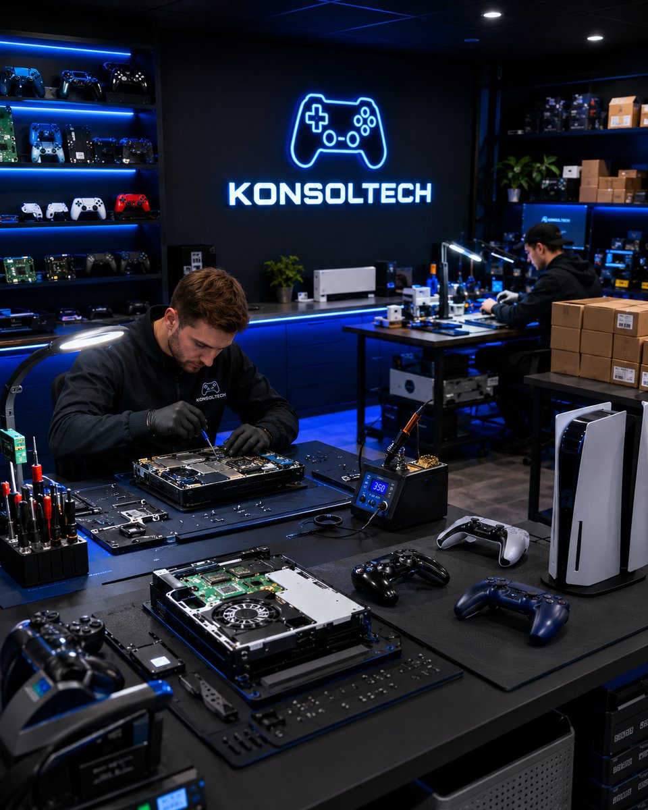

Türkiye'nin Gamer-First Tamir Servisi.
Edge'in mikrolehiminden dual-Hall upgrade'e kadar her detayı içerden biliyoruz. KonsolTech sadece tamir noktası değil — gamer kültürünü içinden tanıyan bir ekibin işi.
Edge'in mikrolehiminden dual-Hall upgrade'e kadar her detayı içerden biliyoruz. KonsolTech sadece tamir noktası değil — gamer kültürünü içinden tanıyan bir ekibin işi.

Her kol bizim için sıradan donanım değil — senin oyun anın ve birikimin. Mikroskop altında hassas lehim, ESD korumalı pro tezgah, kalibre ölçüm cihazları ve marka onaylı orijinal parçalar. Her onarımın arkasındaki disiplinli ekip kolunu fabrika ayarında elinde verir.
Atölye sayısı çok, ama gerçekten gamer'ın ne istediğini bilen, mikrolehime hakim, marka onaylı parça stoğu olan ve şeffaf süreç işleten az.
Yaptığımız işin arkasındayız. Aynı arıza tekrarlarsa ücretsiz hallediyoruz, sıfır soru.
Çoğu işlem 60 dakika, kompleks işler 48 saat. Acele edenler için öncelikli servis seçeneği.
Tanı sonrası tek rakam — onaylamazsan tek kuruş alınmaz. Sürpriz ücret yasak.
BGA istasyonu, mikroskop, ultrasonik banyo — Türkiye'de sayılı atölyenin sahip olduğu altyapı.
Edirne'den Hakkari'ye sigortalı, takipli kargo. Şehir dışı da bize 1 günlük mesafede.
Senin gibi oyuncu olduğumuz için anlıyoruz — kol sadece plastik değil, oyunun.
KonsolTech, oyun dünyasına tutkuyla bağlı bir ekip tarafından kurulmuş Türkiye merkezli bir teknoloji ve teknik servis markasıdır. Kurucusu Yunus Emre Alakaz, sektördeki yıllarca deneyimi ve müşteri memnuniyetine verdiği önem ile markayı sürekli ileri taşıyor.
Türkiye'de oyun ve teknoloji sektöründe güvenilir, hızlı ve yenilikçi bir marka olmak. Sadece tamir değil — oyun deneyimini koruyan ve büyüten bir ekosistem.
Müşterilerimize kaliteli ürünleri ve hizmetleri, şeffaf iletişim ve hızlı servis anlayışı ile sunmak. Her gamer'ın elini güvenle bırakabileceği bir adres olmak.
Çoğu tamir atölyesi için kol bir parça yığını. Bizim için ise oyun deneyimi. Bu fark her şeyde kendini gösterir — fiyatlandırmada, sürede, garantide ve sonucta.
İlk soru ücretsiz. Şüpheniz varsa sorun, bilgi alın — sonra karar verin.
WhatsApp'tan Yaz